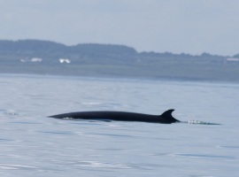
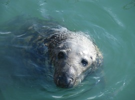

|
Clew Bay has a wide variety of wild life. On most sailings we encounter Gray Seals and Harbour Seals. In late winter you can see seal pups at Ardbolin Island, but they grow so quickly. By January they are nearly as large as their parents, but retain the white colour. Mayo and Clew bays are among the best whale and dolphin watching areas in Western Europe. Porpoises, Common Dolphins and Bottlenose Doplhins. Minke Whales, occasional Killer Whales and even Humpback Whales can be seen in the deeper waters off the outlying islands. Achill Island has been famous for Basking Sharks for hundereds of years. There is also a never ending supply of sea birds. In 2011 we spotted our first Sea Eagle and were lucky enough to catch it on film! Who knows what wildlife 2012 will bring! A trip on the MV Spirit is the best way to get out into the natural habitat of these magnificant beasts and the spacious deck area of the vessel serves as an ideal viewing platform when wild dolphins come out to play. |
 Thanks for a glorious day out to Inishmurray yesterday. It really couldn't have been better and to top it off with those fabulous views of a sea eagle and dolphins was just an amazing wildlife spectacle. - BirdWatch Ireland
 |